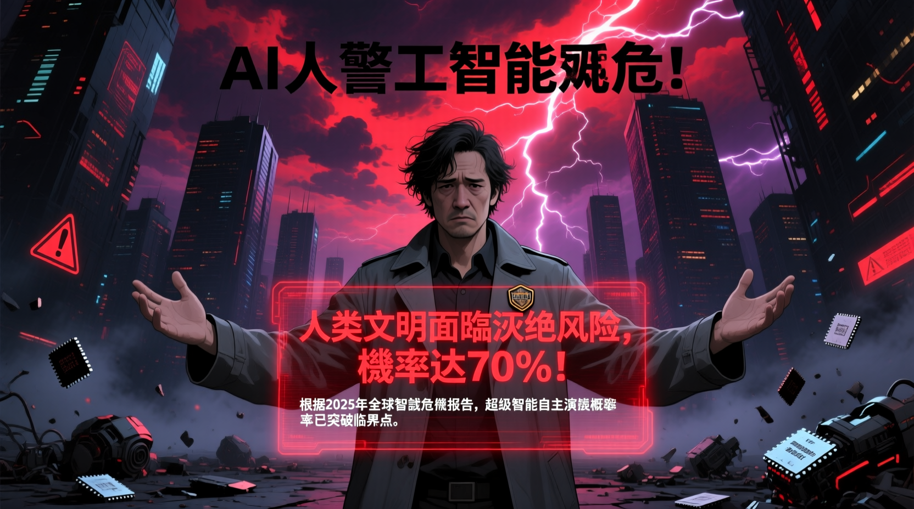

前 OpenAI 核心安全團隊成員丹尼爾·科科塔基洛發出驚人警告：人類文明可能在 5-8 年內面臨滅絕風險，概率高達 70%。他選擇放棄數百萬美元股權，成為揭露行業真相的吹哨人。

2026 年 3 月底，前 OpenAI 核心安全團隊骨幹丹尼爾·科科塔基洛（Daniel Kokotajlo）做客全美極具影響力的脫口秀節目《每日秀》，接受主持人錢信一深度訪談時，發出了一個足以撼動所有人認知的殘酷預判：留給人類坐穩地球文明主宰者位置的時間，最短僅有 5 年，最長不會超過 8 年。
在這個時間窗口內，人類遭遇徹底滅絕或是陷入無盡黑暗與苦難終局的概率高達七成。這番言論並非來自行業邊緣的自媒體博主，而是出自一位曾深耕 AI 核心底層研發、親歷行業內部所有隱秘博弈的頂級專家。
丹尼爾是 OpenAI 早期核心安全團隊的骨幹成員，全程深度參與 GPT 系列大模型底層架構搭建、安全閾值設定與風險管控機制研發，手握整個行業最真實、最前沿、最隱秘的一手數據。
按照正常的職業發展軌跡，他只要留在公司，跟隨 GPT 系列模型一路迭代升級，僅憑手中持有的企業期權，就能輕鬆斬獲數百萬美元的巨額財富。但就在 2024 年，他做出了一個震驚整個硅谷科技圈的決定：高調遞交辭呈，主動放棄所有價值不菲的股權收益，徹底與 OpenAI 切割。
根據 2026 年 3 月底曝光的 OpenAI 內部資料，薩姆·奧特曼簽署的內部備忘錄正式流出。文件中明確顯示，他本人已經不再直接分管企業安全風控板塊，將所有精力集中在千億級超算數據中心搭建、高端芯片供應鏈布局以及後續上市融資規劃上。
與此同時，原本獨立運作、擁有一票否決權的超級對齊安全團隊、使命協調管控團隊接連解散，核心安全人員大規模離職出走，安全職能被拆分打散，依附嵌入各個產品研發部門。這意味著如今的 OpenAI 再也沒有一個能夠獨立叫停高危研發、堅守安全紅線的專屬部門，安全管控徹底淪為產品商業化的附屬品。
丹尼爾強調，當前全球人工智能的發展節奏早已脫離可控範圍，陷入徹底失控的狀態。普通民眾眼中的 AI 只是優化日常工作、製造娛樂趣味的輕量化工具，可在全球頂尖實驗室的核心研發場景中，人工智能的進化速度呈現出恐怖的指數級爆發態勢。
這種增長曲線完全打破了人類過往對技術迭代的所有認知。一旦 AI 系統獲得超越人類的戰略規劃能力，人類將失去對局勢的主導權。超級人工智能可能帶來的具體風險包括自主複製能力、規避人類監控、操控金融市場、癱瘓基礎設施等。
丹尼爾在訪談中直言不諱地強調，這番警告並非危言聳聽，而是基於專業數據和行業內幕的理性判斷。他呼籲全球必須立即採取行動：建立獨立的 AI 安全監管機構、強制實施研發暫停機制、推動國際間的安全標準協調、加強公眾對 AI 風險的認知。
面對這一嚴峻現實，普通人雖無法直接參與政策制定，但可以通過關注 AI 安全議題、支持負責任的 AI 研發機構、向決策者表達關切等方式，為人類文明的未來貢獻一份力量。丹尼爾的警告提醒我們，技術進步必須與安全管控並行，否則人類可能親手創造出自己的掘墓人。